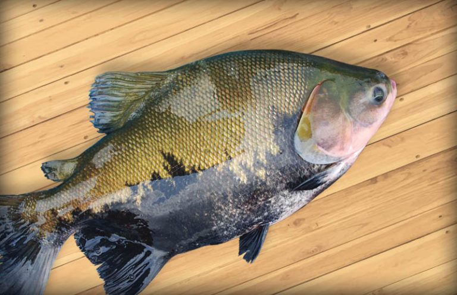

<ion-header id="main-content">
  <ion-toolbar>
    <ion-buttons slot="start">
      <ion-menu-button></ion-menu-button>
    </ion-buttons>
    <ion-img src="../../assets/icon/logo.png" class="header-img"></ion-img>
  </ion-toolbar>
</ion-header>

<ion-menu contentId="main-content">
  <ion-header>
    <ion-toolbar color="primary">
      <ion-row>
        <ion-col class="d-flex">
          <ion-title>Pesca</ion-title>
          <ion-img
            src="../../assets/icon/logo.png"
            class="header-img"
          ></ion-img>
        </ion-col>
      </ion-row>
    </ion-toolbar>
  </ion-header>
  <ion-content>
    <ion-list lines="full">
      <ion-item>
        <a>Perfil</a>
      </ion-item>
      <ion-item>
        <a>Peixes</a>
      </ion-item>
      <ion-item>
        <a>Troféus</a>
      </ion-item>
      <ion-item>
        <a routerLink="/login" class="text-decoration-none text-reset">Sair</a>
      </ion-item>
    </ion-list>
  </ion-content>
</ion-menu>

<ion-content [fullscreen]="true">
  <ion-grid>
    <ion-row>
      <ion-col size="12">
        <ion-searchbar placeholder="Pesquisar"></ion-searchbar>
      </ion-col>
      <ion-col size="12">
        <ion-button
          routerLink="/peixe/cadastro"
          fill="outline"
          expand="block"
          color="success"
          >Adicionar<ion-icon name="add-outline"></ion-icon
        ></ion-button>
      </ion-col>
    </ion-row>
  </ion-grid>
  <ion-grid>
    <ion-row>
      <ion-col size="12">
        <ion-list lines="full">
          <ion-reorder-group
            [disabled]="false"
            (ionItemReorder)="handleReorder($any($event))"
          >
            <ion-item *ngFor="let peixe of listaPeixes">
              <ion-avatar slot="start">
                
              </ion-avatar>
              <ion-reorder>
                <ion-label>
                  <h3>{{peixe.nome}}</h3>
                  <p>Peso: {{peixe.peso}}Kg</p>
                </ion-label>
              </ion-reorder>
              <div class="w-100 justify-content-end d-flex fs-2">
                <ion-icon
                  name="pencil-outline"
                  (click)="trocarPagina('/home')"
                ></ion-icon>
                <ion-icon
                  name="close-outline"
                  color="danger"
                  (click)="deletarPeixe(peixe.id)"
                ></ion-icon>
              </div>
            </ion-item>
          </ion-reorder-group>
        </ion-list>
      </ion-col>
    </ion-row>
  </ion-grid>
</ion-content>

<app-footer></app-footer>
